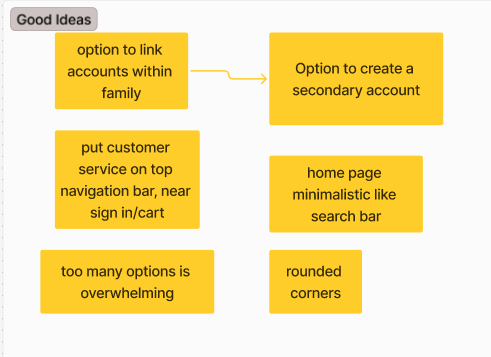

A More User-Friendly Amazon

As my final project for the class DTX: 495 Introduction to Design Theory and Tools, my classmates and I had to use our learned skills to make a website more user friendly.
Step 1: User Research
Strategy and Scoping
Before starting to design, we started by developing a document that details that the brand, users, and shareholders need from a website. By doing this, we detailed the requirements that the website would need, such as a log out button, advertising, and more.

User Observation + Interview
Afterwards, we needed to understand what users feel are working well and what's not working well. So, the three of us each went out and conducted three user observations with an interview afterwards. Some insights were that they felt like it was easy to navigate, but some are overwhelmed by the options. Note: (Names were changed to protect identity)

Competetive Analysis
Then, to find more points of improvement, we did a competetive analysis comparing the Amazon with it's competetiors such as Target and Walmart. What we found that Amazon was highly valued for it's variety of options, great prices, and fast shipping. These aspects would be kept in mind during our design phase.

Usability and Accessibility Audit
The type of research that we did was an usability and asccessibility audit from buying to checkout. It was found that it would pass most of these checks except for "Aesthetic and Minimalist Design", "Image Alternative Text", and "Visible Keyboard Focus". Of these three, "Aesthetic and Minimalist Design" is the only one which we could tackle with our design directly.
Step 2: Synthesis
Insights
With a wealth of research, we synthesized our research into key insights on the current status of Amazon's useability. Of these insights, we focused on three parts of Amazon we wanted to change in our redesign: the top navigation bar, the help button, and increasing minimalism. The goal of increasing minimalism is to cover the "Minimalist Design" heuristic and the possibility users would become overwhelemed by options.
Step 3: Idea Development
Rapid Braingstorming
Knowing what we had to improve, we then did three quick sessions of rapid brainstorming in each of the three areas in order to gain ideas.
Selected Ideas
Afterwards, we selected the most probable, best ideas that would help solve the issues we found. One such example was reducing the amount of options on a page since to reduce mental load and help users use Amazon faster, making customer service more recognizable, and a homepage that centers around a search bar.
Step 4: First Prototype
Lo-fi Prototype
Using the original pages as a reference, we redesigned those pages according to our improvements. In particular, the home page has a big search bar in the center since what we found during the observations that users would typically go towards the search bar immediately. By making the search bar bigger and more visible, it aids in enhancing the user's speed when searching for products.
Step 5: Iteration
User Evaluation
Then we asked several people questions on their feeling on our lo-fi redesigns of Amazon. Users expressed positive feelings about the simpler design (such as the searchbar) but felt like the promotional banner was too big. They also suggested combining and simplifying similar sections in the shopping cart page.
Step 6: Final Result
Front Page
With our newfound insights, we did a final revision of our wireframe from lo-fi to hi-fi. On the homepage, it has a smaller promotional banner as it was a critique of the first design. Another aspect was that the help section, designated by the "?" is on the main bar, and that would help with people having trouble logging in. Items on the tab bar were reduced as to not overwhelm the user.
Product Page
As part of minimalizing Amazon, we reduced amount of products avaliable on one page to eight which is the max amount of choices a person can handle before mental load crams the decision-maling process. We also reduced it to it's esstentials: image and price.
Checkout Page
One of the things that was found during the user evaluation was that the checkout page contained too many sections, so we reduced the four sections in two which contains the esstentials: checking out and other products.
Conclusion
By simplifying Amazon through our redesign, we made Amazon more user-friendly by decreasing the mental load that it takes for the user to make decisions. We also moved the help button to the top bar to prioritize helping users find help.